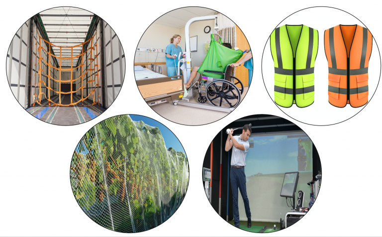
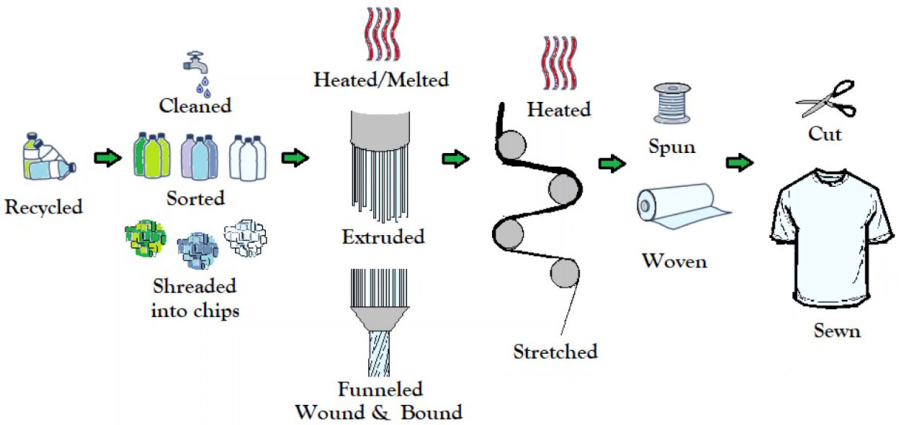

Polyester
Polyester is a type of polymer that is widely used in various applications. It is a synthetic polymer made from
ester monomers.
Here are some key features of polyester:
- Durable and strong
- Resistant to wrinkles and shrinking
- Quick-drying
- Easy to care for
Polyester is commonly used in the production of clothing, fabrics, plastic bottles, and more. Its versatility
and durability make it a popular choice in the manufacturing industry.
Uses of Polyester
Due to its excellent properties, polyester finds its application in various industries. Some common uses
include:
- Textile industry for clothing and home textiles
- Bottle manufacturing for beverages
- Carpet production
- Packaging materials

Environmental Impacts
While polyester has many advantages, it's important to consider its environmental impact:
- Non-biodegradable: Polyester is not easily broken down by natural processes, contributing to
environmental pollution.
- Resource-intensive: The production of polyester requires significant energy and resources.
- Microplastic pollution: Over time, polyester products can shed microplastics, which may have adverse
effects on ecosystems.

Polyester Production
Creating polyester involves several steps:
- Polymerization: This is the process of combining monomers to form a polymer chain. In the
case of polyester, ester monomers are polymerized.
- Condensation Reaction: Ester monomers undergo a condensation reaction, resulting in the
release of a byproduct, such as water.
- Spinning: The polymer is then spun into fibers using various techniques, depending on the
desired end product.
- Weaving/Knitting: The fibers are woven or knitted to create fabric or other polyester
products.
- Finishing: The polyester fabric undergoes finishing processes, which may include
treatments for softness, color, and other properties.

Fun Facts About Polyester
- Polyester was first introduced to the public in the early 1940s as a substitute for silk in
parachutes during World War II.
- The word "polyester" comes from a combination of the polymers used and the ester functional group in its
structure.
- Polyester fabrics are known for their resistance to mildew and mold, making them suitable for various
weather conditions.
- Recycled PET (rPET) is a common form of recycled polyester, often used in sustainable fashion and
products.
Other Resources
If you're interested in learning more about polymers and polyester, here are some recommended resources: